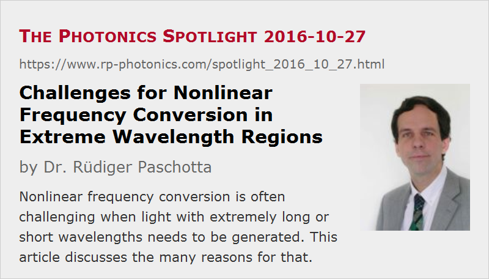

Challenges for Nonlinear Frequency Conversion in Extreme Wavelength Regions
Posted on 2016-10-27 as a part of the Photonics Spotlight (available as e-mail newsletter!)
Permanent link: https://www.rp-photonics.com/spotlight_2016_10_27.html
Author: Dr. Rüdiger Paschotta, RP Photonics Consulting GmbH
Abstract: Nonlinear frequency conversion is often challenging when light with extremely long or short wavelengths needs to be generated. This article discusses the many reasons for that.

Nonlinear frequency conversion – for example, frequency doubling or optical parametric amplification, can be performed in very different spectral regions. In this article, I discuss some challenges which one encounters in extreme spectral regions. Some of them are related to limitations of nonlinear crystal materials, but there also some others.
Challenges for Short Wavelengths
Optical Transparency and Phase Matching
First, we obviously need to have a nonlinear crystal material with sufficient transparency. There is a limited range of materials with good transparency in the ultraviolet region – typically, one uses borates such as BBO or LBO. As far as those offer suitable phase-matching schemes for the wanted nonlinear interaction, this is fine, but the limited choice of materials can of course make it difficult to obtain phase matching in a convenient way. For example, in some cases one would really prefer to have type-I phase matching, but can only get a configuration with type-II phase matching.
Note also that quasi-phase matching is difficult to realize for ultraviolet light generation, because (a) the typically used materials (e.g. borates) are not suitable for techniques like periodic poling and (b) the required poling period would anyway be inconveniently small due to the strong chromatic dispersion for short wavelengths.
If you obtain phase matching in some way, you will usually find that the phase-matching bandwidth is fairly small due to the strong chromatic dispersion, i.e., a strong wavelength dependence of the refractive index at short wavelengths. This is a problem mostly for converting ultrashort pulses: the resulting group velocity mismatch can easily become several picoseconds in a few millimeters. Efficient conversion without temporally broadening the generated pulses usually requires that the overall group velocity mismatch within the crystal length stays below the pulse duration. So you have to work with a quite limited crystal length, making efficient conversion more difficult. You may look out for crystal materials with low group velocity mismatch, but those tend to be the ones having a relatively low nonlinearity.
Optical Damage
A further difficulty is that the damage thresholds of optical materials are relatively low for ultraviolet light. This is essentially because a relatively small number of photons is sufficient to push an electron from the conduction band into the valence band. In many cases, two photons are already sufficient – one then has substantial two-photon absorption, which is not only inconvenient in terms of losing light but also because the generated free carriers cause additional trouble. Typically, they are involved in damage and degradation phenomena. Certain impurities can also contributors such effects. Through various mechanisms of that kind, one often suffers problems like rapid degradation of crystals.
Group Velocity Mismatch
For ultrashort pulses, the combination of strong group velocity mismatch with limited optical intensities (for avoiding optical damage) is particularly bad; it often severely limits the possible single-pass conversion efficiency. In that regime, frequency conversion works better with longer pulses; one can then use longer crystals. The stronger effect of beam divergence in a longer crystal may not be a problem, if the focusing is anyway limited by damage phenomena rather than by beam divergence.
Challenges for Long Wavelengths
Light with rather long wavelengths can be generated by difference frequency generation, as idler light in parametric amplification or oscillation, or with optical rectification.
Transparency
Again, the limited transparency ranges of optical materials can then be a problem. It is not that substantial absorption of the product wave is necessarily preventing the conversion, but of course it works against efficient conversion – not only because already generated long-wavelength light gets lost by absorption, but also because keeping its intensity down in the crystal reduces the amount of generated product light in the first place. (One can also see that effect in the form of reduced pump depletion.)
Beam Divergence
Another problem results from the strong beam divergence for focused light at long wavelengths. This can be a particularly severe problem for the generation of terahertz radiation; even if the input light can be tightly focused, that may not help very much if the generated terahertz wave diverges so strongly that it quickly loses overlap with the pump light.
Note also that for THz radiation the frequency bandwidth is often not much smaller than the mean frequency. That implies that the strength of divergence varies substantially within the pulse spectrum. That leads to complicated spatio-temporal properties of the generated light, which can make it difficult to efficiently get the light to some application.
Low Radiation at Low Frequencies
Another challenge is that the involved low frequencies make it difficult to effectively radiate light. Consider, for example, difference frequency generation with two optical input beams. These generate a nonlinear polarization wave in the crystal, which then must radiate the wanted light. Even for low generated frequencies, the generated nonlinear polarization can be quite strong. However, the radiated power is not only proportional to the square of the amplitude of the polarization, but also to the fourth power of the generated optical frequency – this is the same dependence as for radiation of a simple oscillating dipole. So even if you push the material as hard as it can tolerate, you won't get much power out at a low frequency.
The Photon Energy Problem
Besides, the resulting power conversion efficiency is fundamentally limited by the photon energy issue: one higher-frequency photon is converted into one output photon and an additional photon for the lower-frequency input wave. So the power is primarily converted from one optical wave to the other, rather than into the wanted product wave.
This article is a posting of the Photonics Spotlight, authored by Dr. Rüdiger Paschotta. You may link to this page and cite it, because its location is permanent. See also the RP Photonics Encyclopedia.
Note that you can also receive the articles in the form of a newsletter or with an RSS feed.
Questions and Comments from Users
Here you can submit questions and comments. As far as they get accepted by the author, they will appear above this paragraph together with the author’s answer. The author will decide on acceptance based on certain criteria. Essentially, the issue must be of sufficiently broad interest.
Please do not enter personal data here; we would otherwise delete it soon. (See also our privacy declaration.) If you wish to receive personal feedback or consultancy from the author, please contact him e.g. via e-mail.
By submitting the information, you give your consent to the potential publication of your inputs on our website according to our rules. (If you later retract your consent, we will delete those inputs.) As your inputs are first reviewed by the author, they may be published with some delay.
|  |
If you like this page, please share the link with your friends and colleagues, e.g. via social media:
These sharing buttons are implemented in a privacy-friendly way!